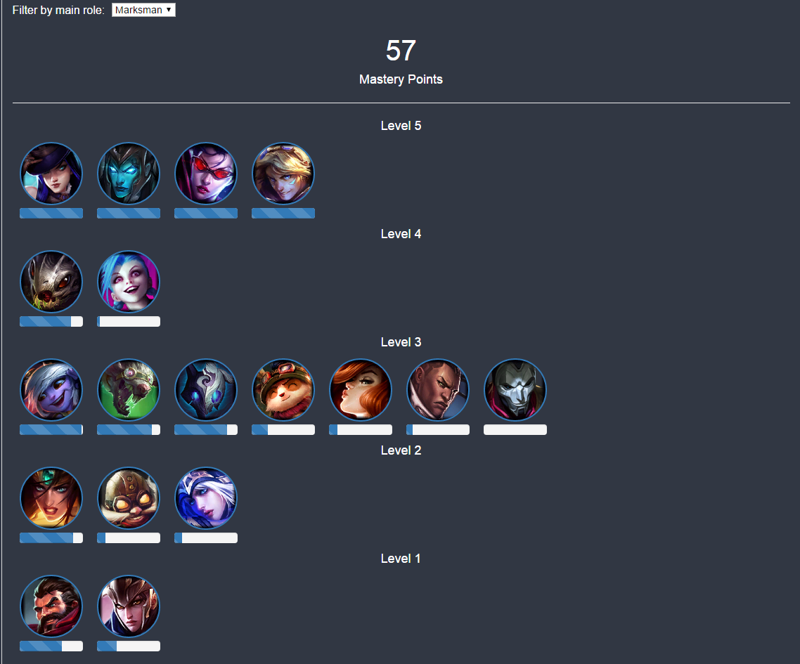
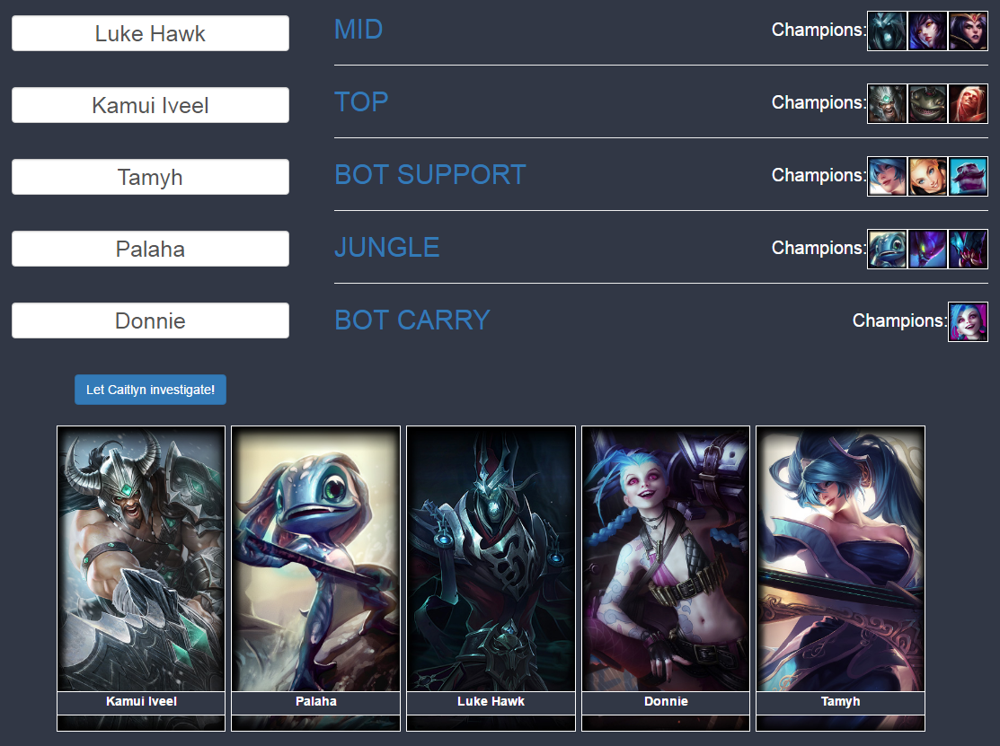

Overview
Master of Legends is a Web Application originally created for The Riot Games API Challenge 2016.
The goal of this application is to visualize and to analyze Champion Mastery and related data.
Technical information and information about how to run it locally can be found at the Readme document in the GitHub repository.
While making this application, I had some design goals in mind:
Librarys
The external librarys that I used here are:
Now that you know what I used to build this, let's walk together through the application and see what it can do!
Application Walkthrough
Home Page
The first thing you see when you go to this application is the Home Page:
It has fields where the user enter his Summoner Name and Region.
It also shows a random background (I'm already using the Riot Games API to get it).
When the user enter his informations and click the button, he is redirected to the Summoner Page.
Summoner Page
To see what this page has to offer, let's use myself as an example.
I typed my Summoner Name 'Luke Hawk' and clicked in 'BR'.
After the loading, the first thing we see is an Overview of my Summoner, my top 3 Mastered Champions and my top 3 Mastered Champions with Chest Available.
Click three times in the Summoner Icon :D
The next thing we see is a collapsile panel with the option to see all the Champions that I have Champion Mastery Points. The blue progress bar represents the Level Progress you made with the champion, and by putting the mouse over the progress bar, you can see the Mastery Points to next Level.
Bootstrap helped me to make this collapsile panel!
We can filter the List by the Champion role. The roles are Assassin, Fighter, Mage, Support, Tank and Marksman. i.e. filter by Marksman:

By clicking in 'Chart' below 'Show all champions', we can also see a Bar Chart showing the Level 5, 4 and 3 Champions comparing the Champion Points I have. With the mouse over a bar, we will see a tooltip with details. The Champion name and description will be in the language of the server you clicked in the Home Page, that's why in this example we'll see the tooltip in Portuguese.
The Chart is made with HighCharts.
The next thing we see is a Pie Chart (made with HighCharts). This Pie Chart shows the distribution of your Champion Points by the main Role of the Champions. Remember, the roles are Assassin, Fighter, Mage, Support, Tank and Marksman.
One of the most important things in Data Visualization is Linking Data! Instead of just showing the Data as the API brings, I tried to think in ways to link the Champion Mastery Data with the others available informations.
In this especific Chart I linked the Champion Mastery information with the Champion Information (all from the Riot API). When you click in a slice of the Pie Chart, you can see the Champions from that Role. Images below:
The next thing we see is another Pie Chart. The information I linked is this Chart is the Champion Mastery Data and the Summoner's Matchlist. For this I considered Ranked Team Builder Draft, Ranked Solo and Ranked Team in Summoner's Rift from Seasons 2015 and 2016 only.
The Riot Games API gives a Matchlist with the played Champion and Lane information for each match.
This was a little complicated. To make this chart I grouped the Lanes (Top, Jungle, Mid, Bot Carry and Bot Support), and for each Lane, I get the Champions played and the number of games played by this Champion in this Lane. This is needed because I wanted to distribute the Champion Points for each Champion in each Lane. i.e. I have 1000 Champion Points with Caitlyn and I played 9 games positioned at Bot Carry and 1 game at Mid. So my algorithm considers that I have 900 Caitlyn Champion Points in Bot Carry and 100 Caitlyn Champion Points in Mid.
We can see images below (the second is when I click in Bot Carry):
Data Visualization is not only a tool to see Data, it's also a tool to answer questions!
In the Charts above, we can answer questions like:
Those questions are interestings, howsoever they're simple.
But let's dive in a more complicated question:
Let's use Data Visualization to try to aswer this question!
The next Chart is probably the less usual and more complicated here. It's called Parallel Coordinates Visualization and it's great to visualize Correlation.
"Luke, what is Correlation?", you could ask.
Poorly talking, Correlation is a type of statistical relationship involving dependence between data.
To aswer the question above, I considered three informations:
This comparison is not much precise because I only got information about Ranked Stats, and you can get Champion Points in Normal Games aswell, but I think it's a good measure.
In short, what I wanna see is if the higher the Champion Points, the greater the Win Rate and KDA (Positive Correlation).
Note that what I'm comparing is the Correlation between Champion Points and Performance for Each Summoner. For a Summoner A you could see a Positive Correlation, but for another Summoner B, you could see a Negative Correlation or no Correlation.
If the Summoner has a Positive Correlation between the considered variables, we should see that the higher the Champion Points, the greater is the Win Rate and KDA:
If the Summoner has a Negative Correlation bewtween the considered variables, we should see that the higher the Champion Points, the fewer is the Win Rate and KDA.
In this example image we can see a Negative Correlation between Win Rate and Champion Points, a Negative Correlation between Champions Points and Average KDA, but a Positive Coorelation between Win Rate and Average KDA (imagine the Chart without the Champion Points Coordinate).
If you can't see a pattern in the lines, we can say that there is no Correlation between the observed variables.
Now let's take a look at my Paralell Coordinates Chart:
It's a little messy, right?
To help the user to visualize the Chart, when you put yout mouse over a line, you can see the information of the Champion and the Champion image goes in front of other. Also, you can filter by Champion name or Champion Role, like this:

To make this Chart, I used D3.js to make DOM/SVG manipulation and Scales and used Crossfilter to group and filter the Data.
The final feature of the Summoner's Page is the Champion Mastery Comparator!
If you want to compare your Champion Points with the Champion Points of a friend, this is the perfect feature for you!.
In this Comparator, we can type Summoner's Names from the Region specified in the Home Page.
For this visualization, I'm using the Percent Stacked Bar created with HighCharts.
Example: I'll compare my Champion Mastery Points with my friends Kamui Iveel and Palaha.
With that, I can see, for example, that I have much more Kalista Champion Points than Kamui and Palaha, but Palaha has more Thresh Champion Points.
Team Builder Page
The Team Builder is a Page where you insert five Summoner's Names from the specified Region and it analyze the Champion Mastery Points for each Summoner and say which lane each Summoner should go, also informing the recommended Champions.
In the image, I typed my Summoner Name and the Summoner Name of 4 friends:

Remember the Champion Points by Position/Lane Chart we saw early?
I'm using that data to make this decision.
When I first had this ideia, I thought it would be simple, but it's more complicated than I expected. It's not that simple because the same Summoner can have more Champions Points for multiple lanes, and then I have to decide which lane allocate this champion. I solved this problem using a greedy strategy: given the 5 Summoners and the 5 Lanes, sort the Summoners for each Lane according to the Champion Points the Summoner has for each lane. Consider only the first Summoners of each Lane and allocate the Summoner X that has more Champion Points in Lane Y. Remove Summoner X and Lane Y from the initial List and do it again till we have one Summoner for each Lane.
Lessons and Dificulties
There are a couple things I faced while doing this Application that I'd like to share.
About me
Hey, there! My name is Lucas, but you can call me Luke. I'm 20, Brazilian and I'm graduating in Computer Science.
You can find me in the silver lands of Summoner's Rift in Brazilian Server by the name of Luke Hawk.
Sorry for any English mistake, it's not my native language, but I tried hard to write all of this correct :)
And, hey, there is an easter egg in this site, try clicking around things :)
Have anything to tell me? Feel free to contact me by email: lukehawklol@outlook.com , I'll be happy in replying you.
Master of Legends isn't endorsed by Riot Games and doesn't reflect the views or opinions of Riot Games or anyone officially involved in producing or managing League of Legends. League of Legends and Riot Games are trademarks or registered trademarks of Riot Games, Inc. League of Legends © Riot Games, Inc.